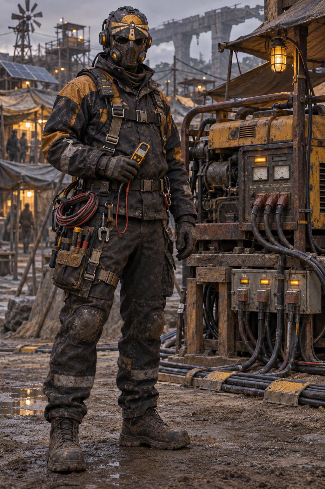

Quando a energia deixou de ser garantida, Farol começou a aprender quais equipamentos eram essenciais e como manter uma fonte de luz sem desperdiçar combustível.
PROPOSTA DE LORE // EM REVISÃO
FAROL.
Farol mantém geradores e circuitos essenciais funcionando. A máscara integral com símbolo de farol reúne proteção respiratória e uma marca que o grupo reconhece à distância.
ABRIR ARQUIVO FOTOGRÁFICO →
Este dossiê apresenta uma proposta revisável com base no conceito visual e na função do personagem. Idade, nome civil, datas e vínculos pessoais ficam em aberto quando ainda não foram definidos.
O que a extinção
deixou nele.
Os registros abaixo organizam sua função e sua trajetória em linhas gerais. As cenas específicas continuam abertas à revisão.
Com prática e ferramentas recuperadas, desenvolveu a rotina de inspecionar geradores, cabos e pontos de distribuição. A máscara protege contra poeira durante os reparos.
Aos 37 anos no presente, cuida da energia da base e ajuda a manter luzes de orientação em pontos seguros. O emblema do farol representa um sinal que continua visível.
Energia e geradores
- Manutenção de geradores
- Inspeção de circuitos e cabos
- Gestão de energia e iluminação
Máscara integral com emblema de farol.
O que carrega
por dentro.
Quieto, constante e cuidadoso com riscos elétricos. Farol prefere uma rotina previsível e ensina os demais a desligar e verificar antes de mexer.
“Uma luz acesa pode guiar alguém de volta.”